Windows
Paso 1: Creación de la máquina virtual
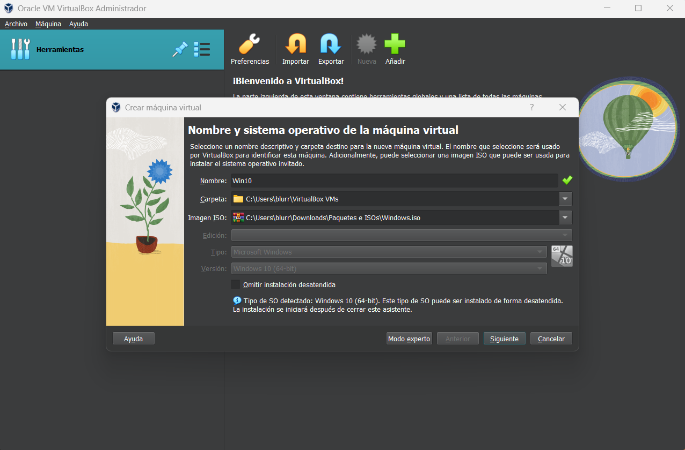Para instalar Windows lo primero que debemos hacer es crear una máquina virtual desde Oracle VM.
Seleccionamos la opción “Nueva” en el menú superior central. Se abrirá una ventana donde deberemos determinar el nombre de la máquina virtual, dónde se guardará esta (por defecto ya tiene seleccionada una carpeta), y la imagen ISO que usaremos para instalar el Sistema Operativo.
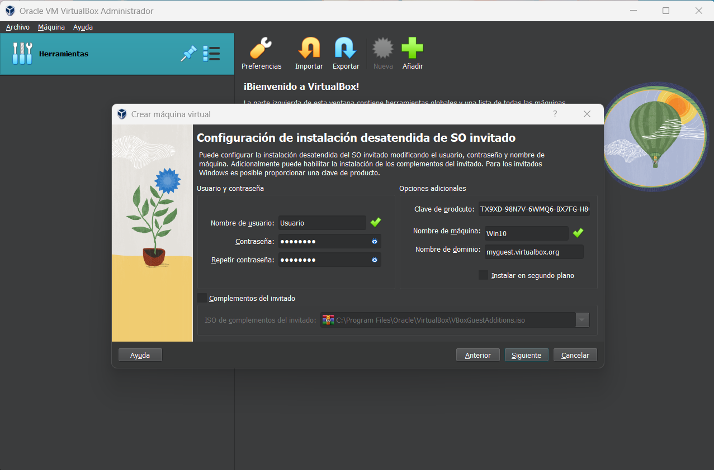La siguiente ventana nos dará a elegir un nombre de usuario y contraseña que podrás seleccionar a tu gusto. También podremos incluir una Clave de Producto. Para esto usaremos una de las diversas claves genéricas que proporciona Microsoft. Nosotros hemos usado la siguiente clave y os animamos a que la uséis vosotros también:
TX9XD-98N7V-6WMQ6-BX7FG-H8Q99
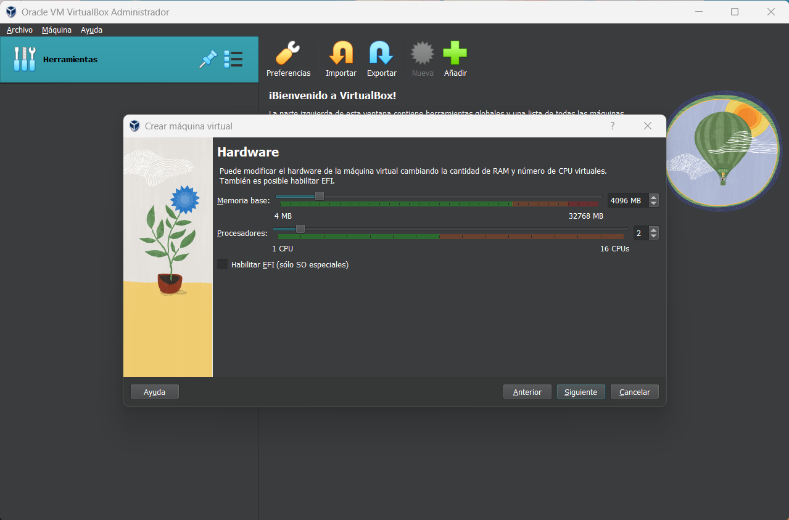En este paso procederemos a asignarle parte de los recursos de nuestro ordenador a la máquina virtual que contendrá Windows 10. Cuántos recursos asignes depende de la capacidad de tu sistema y cuánto quieras otorgarle. En nuestro caso vamos a asignar 4 GB de Memoria RAM y 2 núcleos de la CPU. Con esto, podrá desempeñar correctamente su función.
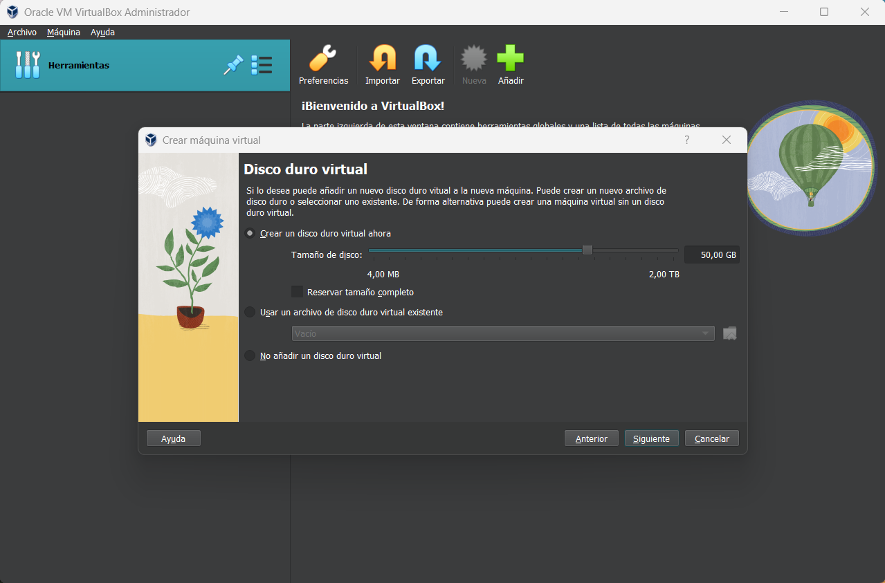En el siguiente punto de la creación podremos asignar cuánta memoria queremos asignarle al disco duro virtual de la máquina. Recomendamos dejar desmarcada la casilla "Reservar tamaño completo", para que el sistema solo use la memoria que realmente esté usando la máquina virtual.
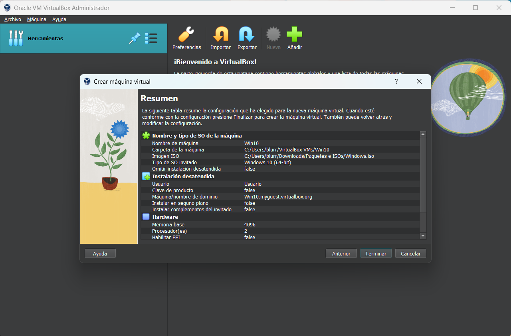Por último, nos aparecerá un resumen con la configuración de la máquina virtual que estamos a punto de crear. Comprobaremos que todo está como debería y pulsamos en "Terminar". Seguidamente, comenzará la instalación del Sistema Operativo.
Paso 2: Instalación y configuración de Windows
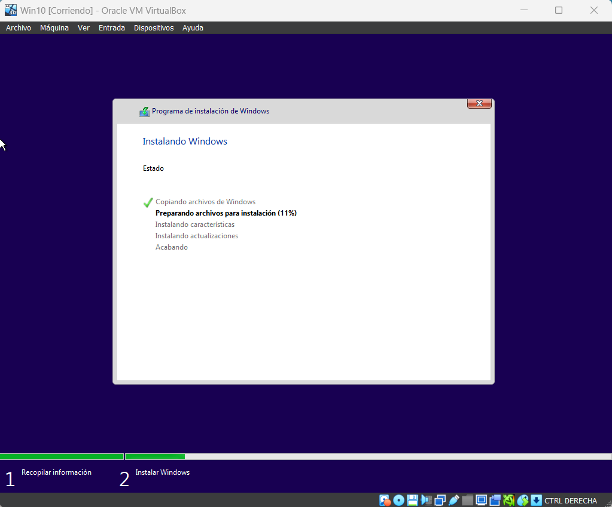La instalación de Windows comenzará automáticamente. Se nos abrirá una ventana que hará las veces de monitor para nuestra máquina virtual. En ella podremos ver, paso a paso, la instalación de Windows 10. Es una instalación asistida y muy sencilla. Tan solo debemos esperar a que termine.
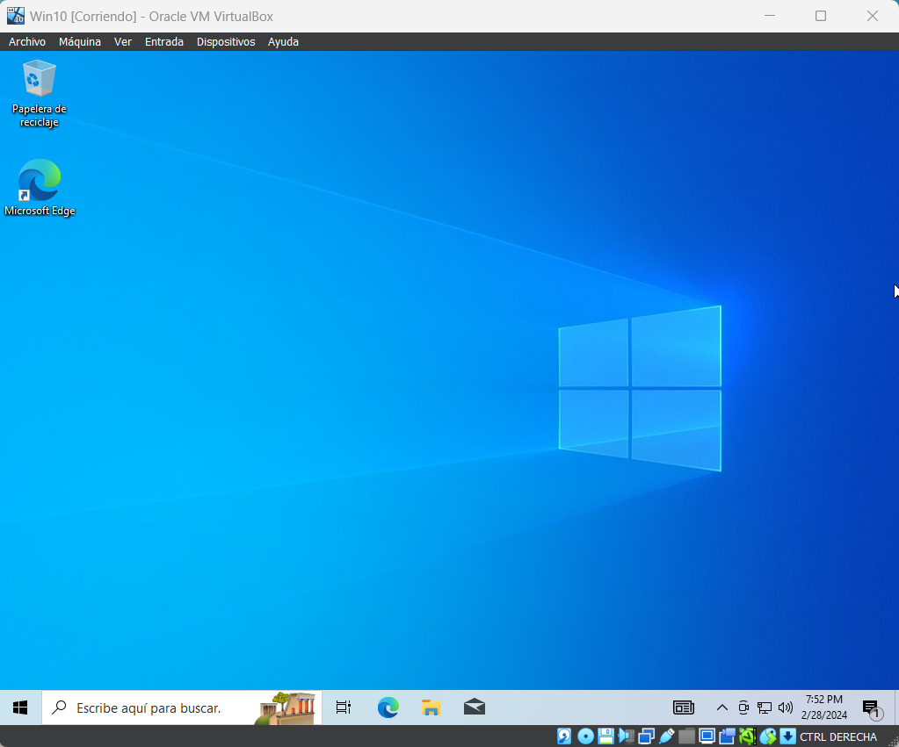Windows 10 ya está instalado y funcionando. Pero vamos primero a asegurarnos de que el sistema está actualizado antes de proceder con el siguiente paso.
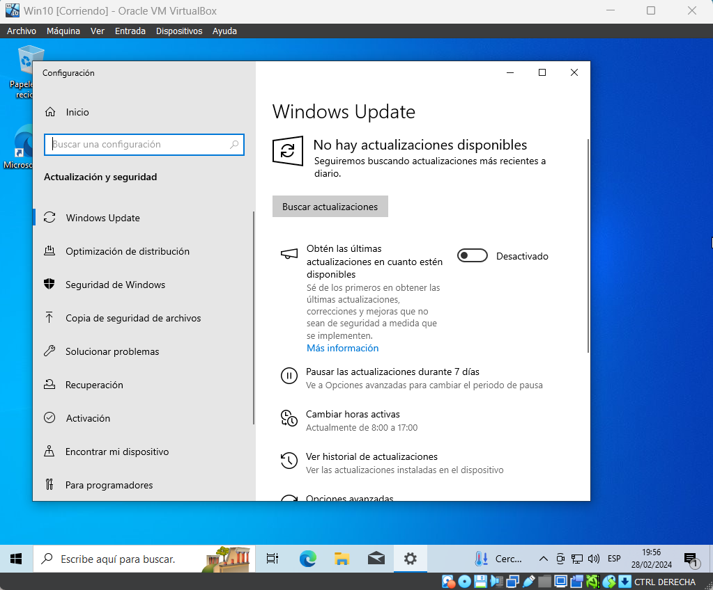Si escribimos "Buscar actualizaciones" en la barra de búsqueda, podremos acceder directamente al apartado de Windows Update. Allí, al seleccionar en "Buscar actualizaciones", el asistente comenzará a buscar todas las actualizaciones disponibles y comenzará a instalarlas.
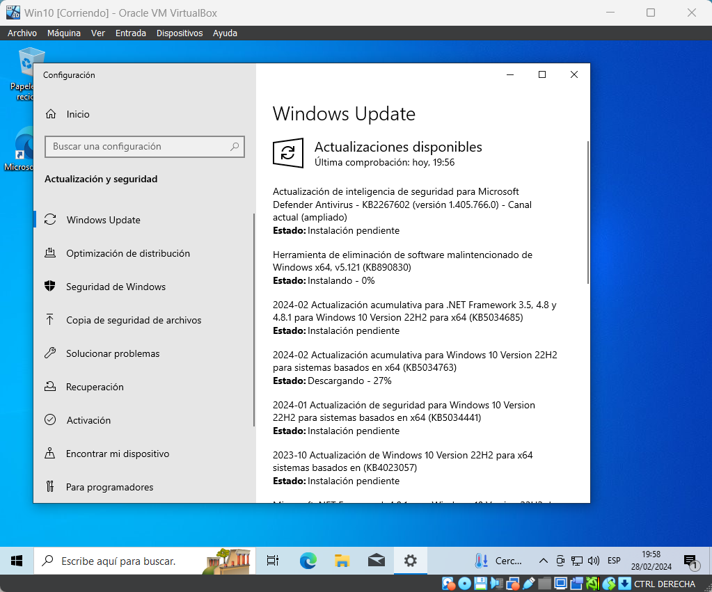Una vez instaladas las actualizaciones, Windows nos pedirá reiniciar para completarlas. También podría convenirte asegurarte de que el idioma del sistema y la disposición de teclado está conforme a tus necesidades.
A continuación, pasaremos a cambiar algunos parámetros del sistema para permitir la salida y la entrada para acceder a recursos compartidos entre sistemas.
Paso 3: Configuración de Firewall de Windows
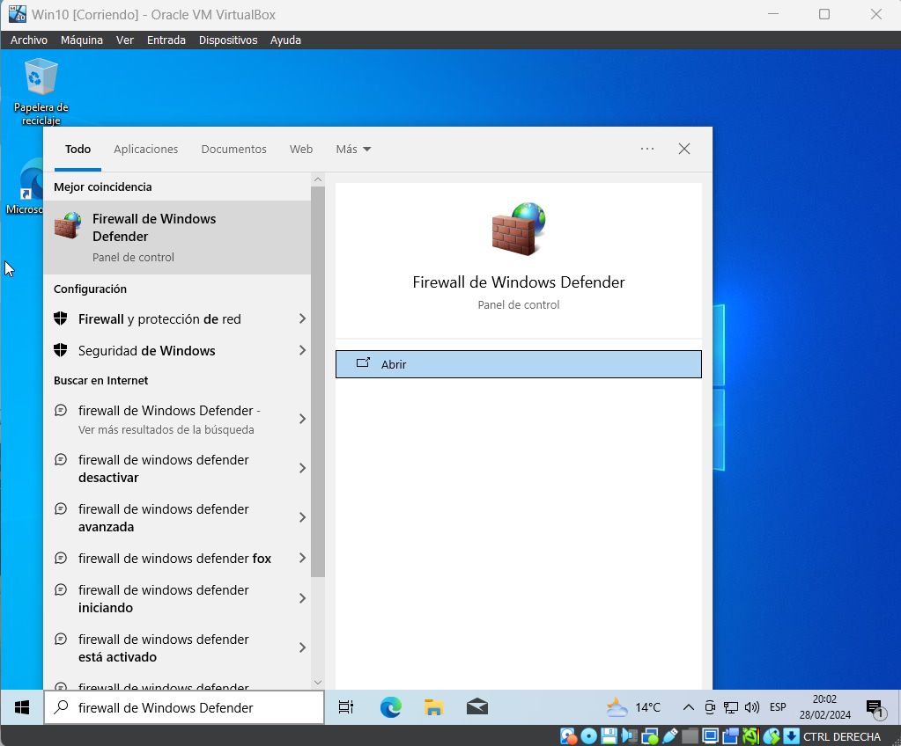Escribiremos, de nuevo en la barra de búsqueda, "Firewall de Windows Defender". Esto nos abrirá una ventana nueva donde, en el menú de la izquierda, deberemos hacer clic en "Configfuración avanzada".
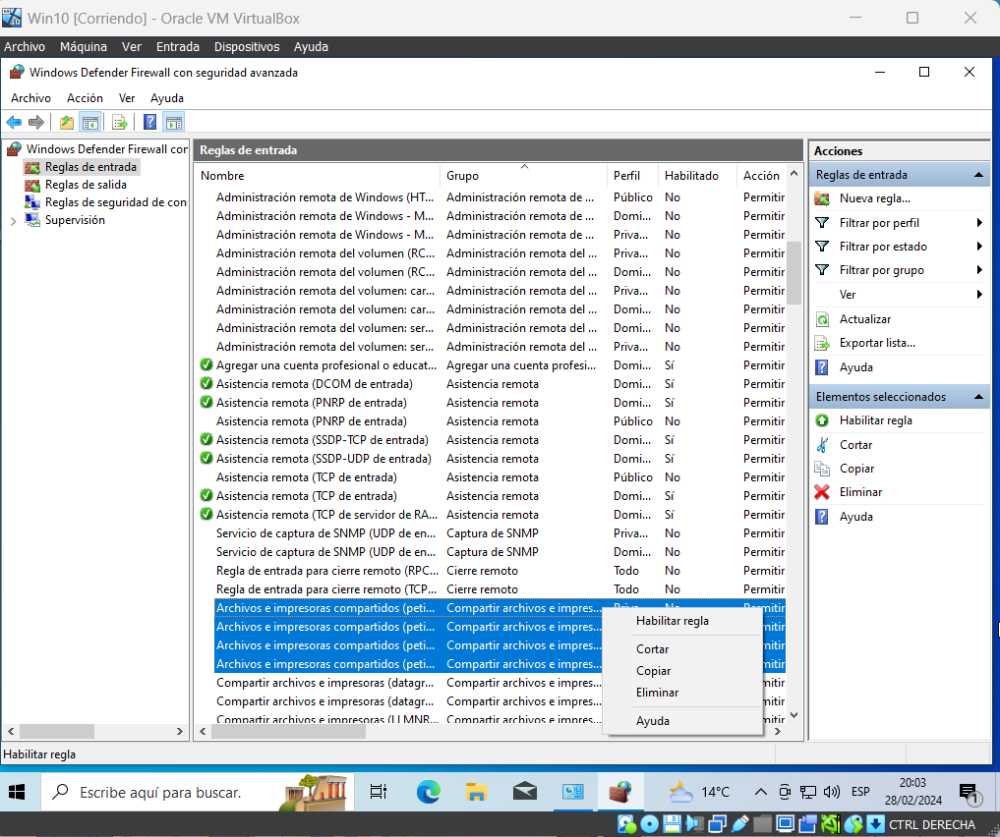De nuevo, a través del menú de la izquierda de la ventana que se acaba de abrir ante nosotros deberemos, entraremos en "Reglas de entrada". Allí podremos encontrar una gran lista de reglas de entrada. Nos interesa bajar un poco y encontrar las cuatro opciones que se llaman "Archivos e impresoras compartidas". Seleccionamos estas cuatro opciones y hacemos click derecho sobre ellas para, finalmente, elegir la opción "Habilitar regla" en el menú contextual.
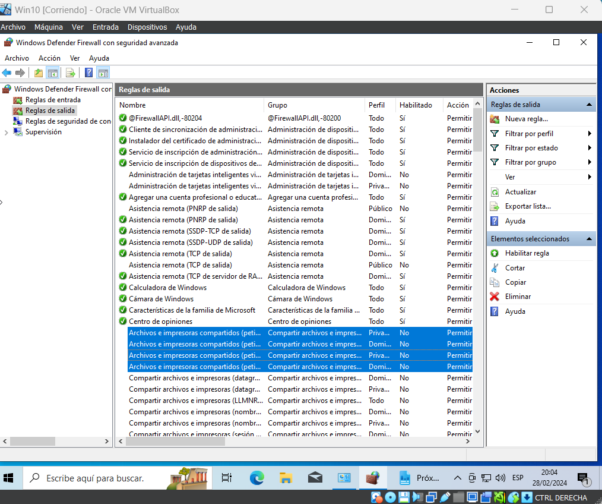Haremos lo mismo con las reglas de salida, a las que accederemos desde el menú izquierdo. Encontraremos las cuatro reglas llamadas "Archivos e impresoras compartidos" y las seleccionaremos y habilitaremos.
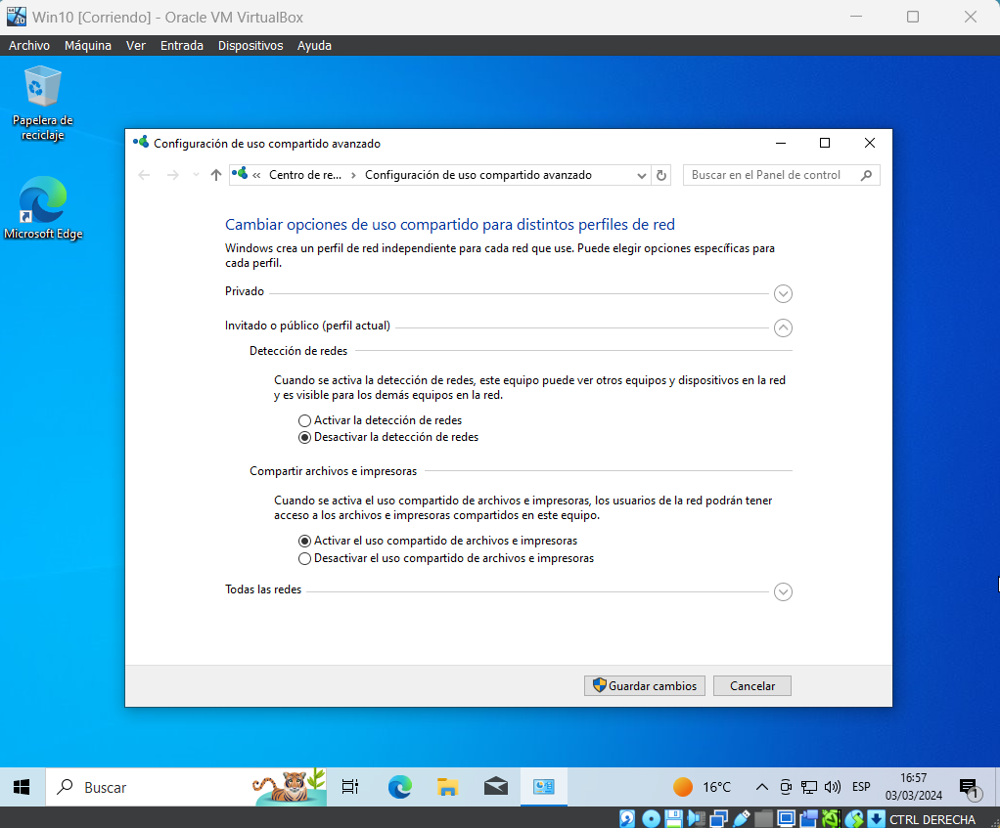Por último, necesitamos activar el uso compartido de archivos e impresora. Para ello, escribiremos en la barra de búsqueda "Administrar configuración avanzada de uso compartido". En la parte inferior de la nueva ventana podremos un apartado llamado "Compartir archivos e impresoras". Debemos marcar la opción "Activar el uso compartido de archivos e impresoras" y darle a "Guardar cambios".
Paso 4: Añadir Windows 10 a la Red NAT virtual.
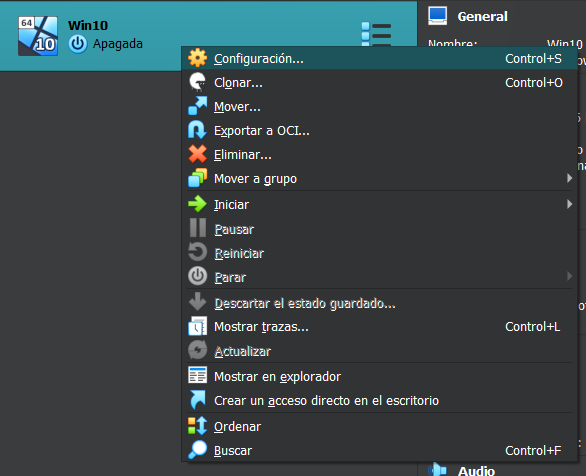Con la máquina virtual apagada, haremos click derecho sobre ella en Oracle VM VirtualBox. Accederemos a la Configuración haciendo click sobre ella en el menú contextual.
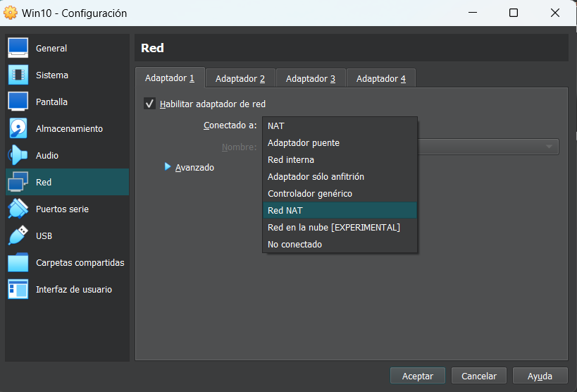En el menú de configuración buscaremos el apartado "Red", a la izquierda. Allí, en la pestaña "Adaptador 1" haremos click al menú desplegable que se encuentra en "Conectado a:" y seleccionaremos "Red NAT" Ya que solo disponemos de una, la elegirá automáticamente.
Nuestra máquina virtual con Windows 10 ya está instalada y lista. Procedemos ahora a explicarte cómo instalar Ubuntu.

Paso anterior: VirtualBox
Retroceder